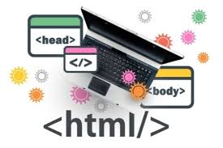
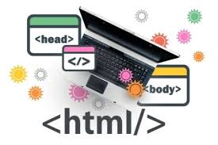

BITACORA DE
CLASE
02/02/2023
HTML
HTML5 es la quinta revisión del lenguaje de marcado estándar que se emplea para la web.
Es uno de los lenguajes de marcado más usados en todo el mundo y la razón es bastante obvia:
gracias a HTML5 podemos crear la estructura de una página web. Texto, imágenes y material
multimedia pueden mostrarse correctamente gracias a HTML5.
En esta clase del dia de hoy vimos a usar GitHub, para
crear
un repositorio, subir un archivo con el codigo para posteriormente
poderlo
modificar si se llegasé a realizar la modifiacion, y lo increible
que GitHub es que
te dice que aspectos se modificaron.
 
